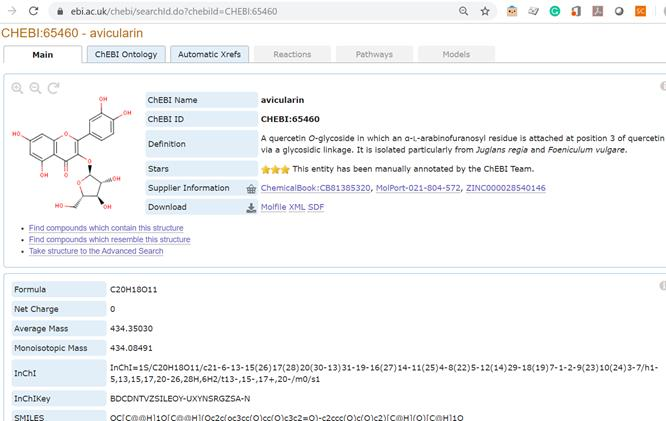
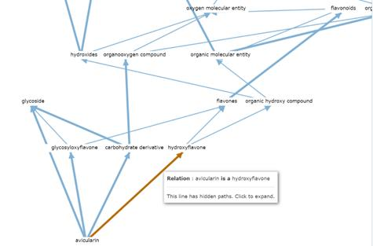
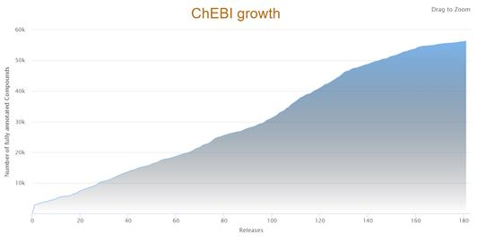
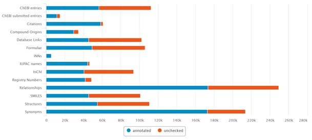
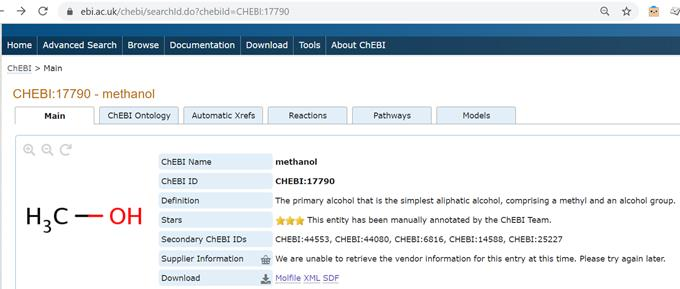
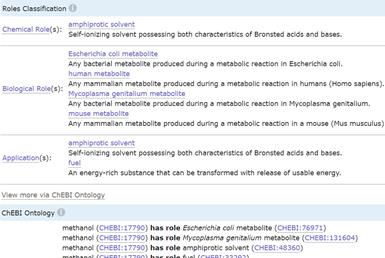
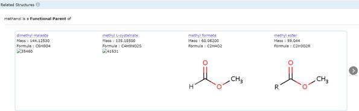
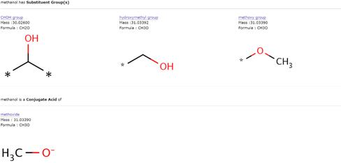
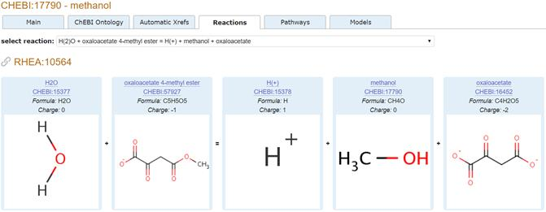
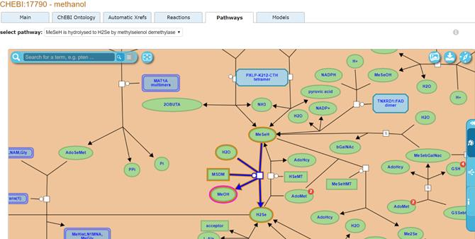

Data publicării: 02.10.2019
Autor articol: Adrian Iftene
Introducere
Substanțe chimice de interes biologic (Chemical Entities of Biological Interest – ChEBI) este un dicționar gratuit de entități moleculare, axat pe compuși chimici de dimensiuni “mici”. Termenul entitate moleculară” se referă la orice poate fi identificat constituțional sau izotopic distinct ca atom, moleculă, ion, pereche de ioni, radical, ion radical, complex, conformer etc. Entitățile moleculare în cauză sunt fie produse natural, fie produse sintetic utilizate pentru a interveni în procesele organismelor vii (Degtyarenko et al., 2008), (de Matos et al., 2010) și (Hastings et al., 2016).
ChEBI încorporează o clasificare ontologică, prin care sunt specificate relațiile dintre entitățile moleculare sau clase de entități și părinții lor și/sau copiii. ChEBI folosește nomenclatura, simbolismul și terminologia avizate de următoarele organisme științifice internaționale:
- Uniunea Internațională de Chimie Pură și Aplicată (International Union of Pure and Applied Chemistry – IUPAC);
- Comitetul Nomenclaturii Uniunii Internaționale de Biochimie și Biologie Moleculară (Nomenclature Committee of the International Union of Biochemistry and Molecular Biology – NC-IUBMB).
Moleculele codificate direct de genom (de exemplu, acizii nucleici, proteinele și peptidele derivate de la proteine prin clivaj) nu sunt de regulă incluse în ChEBI. Toate datele din baza de date sunt neproprietare sau provin dintr-o sursă care nu este proprietară. Prin urmare, resursa ChEBI este accesibilă gratuit și este disponibilă pentru oricine. În plus, fiecare componentă a datelor are specificat în mod explicit referința la sursa originală. Datele de pe site-ul web al resursei sunt disponibile sub Licența Creative Commons (CC BY 4.0).
În Figura 1 de mai jos avem un exemplu de element din ontologia ChEBI (“avicularin”).

Resurse încorporate în ChEBI
Pentru a crea ChEBI, datele dintr-o serie de resurse existente au fost încorporate și supuse procedurilor de fuziune pentru a elimina duplicatele. Cele mai importante resurse sunt:
- IntEnz – baza de date relațională integrată cu enzime a EBI. IntEnz este copia principală a nomenclatorului de enzime, recomandările NC-IUBMB privind nomenclatura și clasificarea reacțiilor catalizate de enzime.
- KEGG COMPOUND – o parte a enciclopediei Kyoto a genelor și a bazei de date LIGAND cu genomuri. COMPOUND este o colecție de structuri biochimice de compuși.
- PDBeChem – serviciul care oferă acces web la dicționarul de componente chimice al wwPDB, așa cum este acesta încărcat în baza de date PDBe de la EBI.
- ChEMBL – o bază de date a compușilor bioactivi, proprietățile lor cantitative și bioactivitățile, extras din literatura științifică. Face parte din resursele ChEMBL de la EBI.
Detalii ale ontologiei ChEBI
Ontologia ChEBI este împărțită în trei sub-ontologii separate:
- Structura moleculară, în care entitățile moleculare sau părți ale acestora sunt clasificate în funcție de compoziție și structură, de exemplu hidrocarburi, acizi carboxilici, amine terțiare;
- Rolul, împărțit în trei subcategorii: „rol chimic”, care clasifică entitățile pe baza rolului lor într-un context chimic, de ex. ca ligand, inhibitor, tensioactiv; rol biologic care clasifică entitățile pe baza rolului lor într-un context biologic, de ex. antibiotic, agent antiviral, coenzimă, hormon; și „aplicație” care se clasifică pe baza utilizării preconizate de către oameni, de ex. pesticide, medicamente antireumatice, combustibil;
- Particulă subatomică, care clasifică particulele care sunt mai mici decât atomii, de ex. electron, foton, nucleon.
Elemente din ontologia ChEBI
Elemente de bază
Înregistrările din ChEBI sunt caracterizate de următoarele elemente (vezi și Figura 1 pentru detalii):
- Identifier – un identificatorul unic;
- Name – numele recomandat pentru a fi utilizat în bazele de date biologice;
- ASCII Name – numele ChEBI ce conține caractere speciale prezentate în format ASCII;
- Star rating – o evaluare bazată pe nivelul adnotării manuale;
- Structure – reprezentare grafică a structurii moleculare și a moleculelor asociate, identificatorului chimic internațional IUPAC (InChI) și a șirurilor SMILES;
- Formula – formula moleculară;
- Charge
- Average Mass – masa medie;
-
ChEBI ontology – ontologia ChEBI;
- vizualizarea ieșirilor și a intrărilor;
- opțiune de vizualizare în arbore a poziției intrării în Ontologia ChEBI;
- IUPAC Name – nume (denumiri) generate după recomandările IUPAC;
- INN (International Nonproprietary Name) – cunoscută și sub denumirea de nume generic, atribuită de organizația World Health Organization (WHO);
- Synonyms – alte nume alternative împreună cu indicarea sursei lor;
- Brand name – un nume comercial sau al unui proprietar;
- Database Links – link-uri la baze de date – referințe încrucișate manual cu alte baze de date neproprietare;
- Registry Number – număr de înregistrare CAS, număr de înregistrare Beilstein, număr de înregistrare Gmelin (dacă este disponibil);
- Citations – publicații care citează entitatea împreună cu hyperlink-uri la acestea.
Relații
Relațiile din ontologia ChEBI sunt de tipul:
- “is a” – implică faptul că o entitate A este subtip al entității B (vezi Figura 2 de mai jos),
- “has part” – folosită pentru a reprezenta o relație parte-întreg,
- “is conjugate base”/“is conjugate acid of” – relații ciclice folosite pentru a lega acizi cu bazele lor conjugate sau invers,
- “is tautomer of” – o relație ciclică folosită pentru a arăta interrelația dintre doi tautomeri,
- “is enantiomer of” – o relație ciclică utilizată în cazurile în care două entități sunt imagini în oglindă și care nu se suprapun între ele,
- “has functional parent” – folosită pentru a indica relația dintre două entități moleculare (sau clase de entități), dintre care una posedă una sau mai multe grupări caracteristice din care cealaltă poate fi derivată prin modificare funcțională,
- “has parent hydride” – indică relația dintre o entitate și hidrura mamă,
- “is substituent group from” – indică relația dintre un grup substituent (sau atom) și entitatea sa moleculară, din care este format prin pierderea unuia sau mai multor protoni sau grupări simple, cum ar fi grupările hidroxi,
- “has role” – indică comportamentul particular pe care o entitate îl poate manifesta, fie în mod natural, fie prin aplicarea umană.

Statistici
Statisticile de la 1 noiembrie 2019 ne arată modul în care au crescut numărul de intrări în timp (vezi Figura 3 de mai jos) și cum aceste intrări au fost sau nu verificate (vezi Figura 4 de mai jos).


Exemplu din ontologia ChEBI – CHEBI:17790 – methanol
Elementele de bază pentru methanol pot fi văzute în Figura 5 de mai jos (nume, ID, definiție, stele, ID-uri alternative, etc.).

În Figura 6 avem diverse tipuri de detalii pentru methanol: formulă, masă medie, masă monoisotopică, InChi, InChiKey, SMILES (în stânga), roluri (chimic, biologic și aplicații), elemente specifice ontologiei (relații cu alte elemente din ontologie), etc. (în dreapta). În Figura 7 putem vedea structurile înrudite ale “methanol”-ului.



În Figura 8 putem observa un exemplu de reacție pentru methanol, iar în Figura 9 avem un exemplu de pathways pentru methanol.


Concluzii
În acest raport am văzut câteva detalii despre Ontologia ChEBI, una din cele mai folosite ontologii din domeniul medical. Ontologia conține un dicționar ce are informații despre compuși chimici de dimensiuni “mici” (atomi, molecule, ioni, radicali, complexi, etc.).
Referințe bibliografice
- de Matos, P., Alcántara, R., Dekker, A., Ennis, M., Hastings, J., Haug, K., Spiteri, I., Turner, S., Steinbeck, C. (2010) Chemical Entities of Biological Interest: an update. Nucleic Acids Research. 38 (Database issue): D249–54. doi:10.1093/nar/gkp886
- Degtyarenko, K., de Matos, P., Ennis, M., Hastings, J., Zbinden, M., McNaught, A., Alcántara, R., Darsow, M., Guedj, M., Ashburner, M. (2008) ChEBI: a database and ontology for chemical entities of biological interest. Nucleic Acids Research. 36 (Database issue): D344–50. doi:10.1093/nar/gkm791
- Hastings, J., Owen, G., Dekker, A., Ennis, M., Kale, N., Muthukrishnan, V., Turner, S., Swainston, N., Mendes, P., Steinbeck, C. (2016) ChEBI in 2016: Improved services and an expanding collection of metabolites. Nucleic Acids Research 44(D1), D1214-D1219.